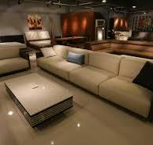

Welcome to Markriche furniture enterprise, your one-stop destination for exquisite furniture that transforms your living spaces into havens of comfort and style. At Markriche, we believe that furniture is not just about functionality; it's about creating an ambiance that reflects your personality and enhances your lifestyle. With a rich heritage of craftsmanship and a passion for design, Markriche furniture enterprise has been a trusted name in the furniture industry for over a decade. Our commitment to quality, innovation, and customer satisfaction sets us apart as a leading furniture provider. Explore our diverse collection of furniture pieces, ranging from contemporary to classic styles, all meticulously crafted to meet the highest standards of durability and aesthetics. Whether you're furnishing a cozy apartment, a spacious home, or a modern office, Markriche has the perfect solutions to suit your needs. Our team of experienced designers and craftsmen work tirelessly to bring you furniture that not only looks stunning but also offers unparalleled comfort and functionality. From elegant sofas and stylish dining sets to ergonomic office chairs and versatile storage solutions, our products are designed to elevate your living and working environments. At Markriche furniture enterprise, we understand that every customer is unique, and so are their furniture needs. That's why we offer personalized design consultations to help you choose pieces that align with your vision and lifestyle. Our dedicated customer service team is always ready to assist you, ensuring a seamless shopping experience from start to finish. Visit our showroom or browse our online catalog to discover the perfect furniture pieces that will transform your space into a reflection of your style and comfort. Experience the Markriche difference today!